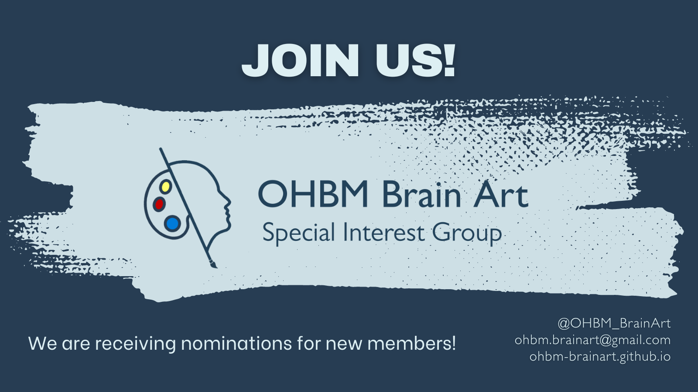

About
History + Board
Who we are
The scope of the Brain-Art SIG is to promote the exchange between Art & Science by fostering the dialogue between artists and members of the OHBM community.
We aim to: encourage artistic approaches and perspectives to understanding human brain function, facilitate the development of novel approaches for the visualization of scientific data, and provide a model of interaction between disciplines while enhancing the public outreach of OHBM.
We achieve these goals through annual activities such as the BrainArt Competition, the BrainArt Exhibition, and Kids Live Activities during the OHBM annual meeting.
Nominations for the Brain-Art SIG elect officers are open for the 2024-2025 term!
Nominate yourself for one of our open positions filling out this form
Board Members
Current Officers July 2023 - 2024 term
Chair: Giulia Baracchini, MSc, PhD Student, Montreal Neurological Institute/McGill University
Twitter
Treasurer: Samantha Audrain, PhD, University of Toronto
Twitter
Secretary: Elisabeth Rounis, PhD, University of Oxford
Art Exhibition Manager: Natasha Clarke, PhD, Centre de recherche de l'Institut universitaire de gériatrie de Montréal
Twitter
Website and Communications Manager: Diana Giraldo, PhD, University of Antwerp
Twitter
Event Manager: Giulia Baracchini, MSc, PhD Student, Montreal Neurological Institute/McGill University
Chair Elect: Olga Boukrina, PhD, Kessler Foundation
Treasurer Elect: Samantha Audrain, PhD, University of Toronto
Secretary Elect: Mengyuan Ding, PhD, Brigham and Women's Hospital
Art Exhibition Manager Elect: Yi-Ju Lee, PhD, Institute of Statistical Science, Academia Sinica
Event Manager Elect: Giulia Baracchini, MSc, PhD Student, Montreal Neurological Institute/McGill University
Immediate Past Chair: Lena Oestreich, PhD, University of Queensland
Twitter
Immediate Past Treasurer: Livio Tarchi, MD, University of Florence
Twitter
Immediate Past Secretary: Gladys Heng, PhD, Nanyang Technological University
Twitter
Immediate Past Art Exhibition Manager: Robin Gutzen, MSc, PhD Student, Research Centre Juelich
Twitter
Immediate Past Website and Communications Manager: Xinhui Li, MS, PhD Student, Georgia Institute of Technology
Twitter